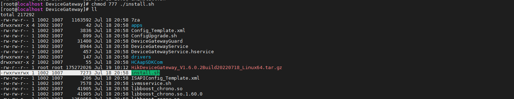
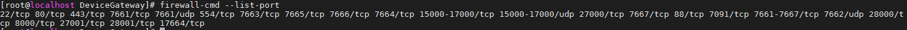
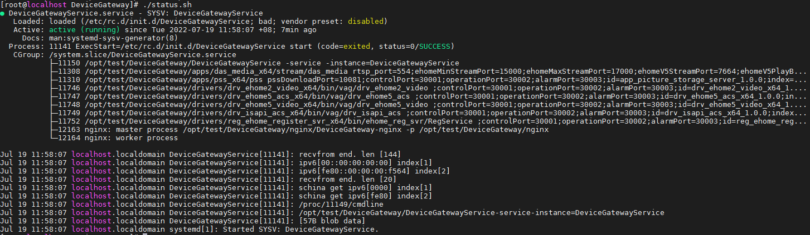

步骤一：安装网关
在服务器或者PC上安装 Device Gateway 服务。安装完成后先进行激活，激活后通过Web浏览器访问并使用 Device Gateway 服务。
端口详情
安装 Device Gateway 前，确保默认端口没有被占用，否则网关服务将无法正常使用。
步骤一：安装Device Gateway
在服务器或者PC的Windows 系统和Linux系统上安装 Device Gateway 服务。在Windows系统上安装成功后，可通过看门狗开启服务、停止服务或退出服务。
在Windows系统上安装Device Gateway
- 右键单击安装包，选择以管理员身份运行，进入安装首页。
- 单击下一步开始安装。
- 单击浏览...选择遗留的配置文件，然后单击下一步。
- 可选操作： 单击浏览...，选择其他路径后，单击下一步，将该服务安装到其他路径下。
- 可选操作： 若HTTP端口有冲突，修改HTTP端口号，否则安装无法继续。
- 单击安装开始安装。
- 阅读安装后的信息，单击结束完成安装。
-
安装成功后，将自动跳转至默认浏览器的Device Gateway登录界面。
-
安装成功后，看门狗服务将自动启动，并隐藏在桌面右下角通知栏。右键单击，选择对应的操作可以停止或开启 Device Gateway 服务或退出看门狗服务。
 ，选择对应的操作可以停止或开启 Device Gateway
服务或退出看门狗服务。
，选择对应的操作可以停止或开启 Device Gateway
服务或退出看门狗服务。-
若远程安装 Device Gateway，需要登录到本地PC才能显示看门狗服务。
-
当重装 Device Gateway 时，有弹窗弹出，要求确认是否保存配置文件，可根据实际需要选择。
-
遗留配置页面如果能检测到之前版本 Device Gateway 的默认安装路径的遗留配置，会显示并默认选中。
在Linux系统上安装Device Gateway
-
新建一个文件夹，如/opt/test/DeviceGateway，作为 Device Gateway
的安装目录，并将网关Linux安装包放在文件夹内。
图 1 安装文件夹
-
使用chmod命令，给安装目录下的install.sh脚本配置执行权限。
说明
-
图 4 配置权限前
-

图 5 配置权限后
-
-
执行install.sh脚本，安装 Device Gateway。
说明
-
安装 Device Gateway 需以管理员运行。
-
安装后会修改系统默认参数：/etc/systemd/system.conf中的DefaultLimitNOFILE修改为1000000，同时会禁用SELinux 。
-
Device Gateway 安装时，会默认给当前目录下所有文件加上权限，以保证程序可以正常运行。
-
Device Gateway 安装时，会自动开启防火墙的网关默认端口，具体端口如下表所示：
端口 端口号 tcp端口
HTTP端口号（默认80），443,554,7091,7661-7667,15000-17000
udp端口
7661,7662,15000-17000

图 8 端口号 -
执行status.sh脚本可以查看Device Gateway 的当前状态。
-
执行start.sh脚本可以将处于停止状态的Device Gateway 启动，执行stop.sh脚本可以将处于运行状态的 Device Gateway 停止。

图 9 当前状态 -
执行uninstall.sh脚本可以卸载 Device Gateway。卸载后，安装目录的文件会全部保留，用户可以手动删除。
图 10 卸载
-


步骤二：激活Device Gateway
安装完成后，Device Gateway 会自动生成一个管理员用户（admin）。为了数据安全，首次通过Web浏览器访问时，要求为admin用户创建密码，用来激活软件。激活后，才能进入Web界面进行配置和操作。